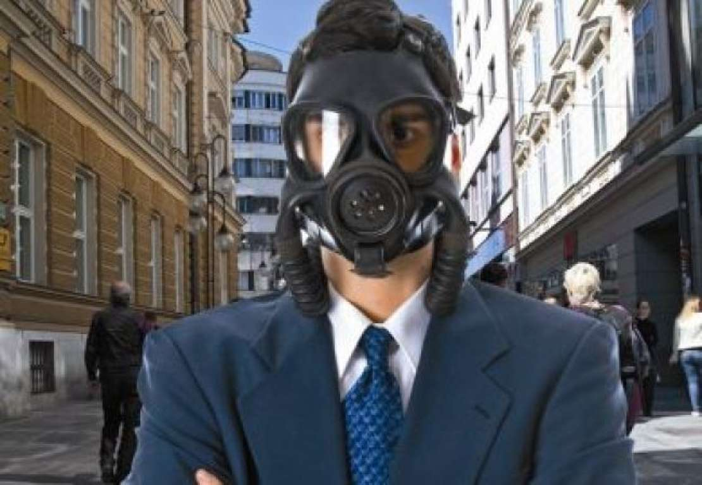

Nanotehnologija in potencialno tveganje za zdravje ljudi
Nanotehnologija je prečudovita znanost, ki je pripeljala veliko NAPREDKA, vendar pa je prinesla tudi nekaj NEGATIVNIH POSLEDIC, predvsem na naše zdravje (nekaj sem o tem napisal že na tej povezevi)
Nanodelci lahko pidejo v telo na RAZLIČNE NAČINE:
- Preko kože (zlasti poškodovane kože)
- Prebavil
- Dihal
Njihovo delovanje odvisno od zelo RAZLIČNIH FAKTORJEV:
- Kemijske sestave
- Velikosti
- Oblike
- Površinskega naboja
- Kristalne strukture [9]
Prav gotovo vas zanima kaj lahko tako majhna zadeva sploh povzroči. Na začetku sem bil tudi sam skeptičen, vendar sem po mojih spletnih raziskavah ugotovil da je v tem primeru malo lahko veliko. Nanodelci so lahko v resnici izjemo NEVARNI. Predvsem je odvisno od samih nanodelcev in kako jih uporabljamo.
Za primer vam bom predstavil TITANOV DIOKSID (TiO2). Gre za izjemno uporabno snov. Uporablja se v kozmetiki, kot dodatek hrani (omogoča podaljšanje obstojnosti hrane zaradi svojih antibakterijskih lastnosti), je zgoščevalec v zdravilih in dodatek v moki... Vendar pa lahko nekateri nanodelci TiO2 povzročijo oksidativno poškodbo celice oziroma tkiva, vplivajo na imunski sistem in izzovejo vnetje.
Titanov dioksid je lep primer nanodelca, ki ima lahko negativne posledice na človeško telo. Tudi posledice niso edine, drugi nanodelci lahko prizadanejo jetra, vranico, ledvica in bezgavke [10]. Treba jih je znati pravilno uporabljati in seveda biti z njimi PREVIDEN (nanovarnost)

Slika 7: Ali so nanodelci nevarni za naše zdravje?